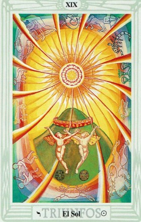

El Tarot de Thoth te trae el mensaje de El Sol, una carta que simboliza la claridad, la alegría y el éxito en tu camino. ☀️🃏
El Sol representa la iluminación y la confianza en la vida. Trae consigo éxito, felicidad y una energía renovadora que te impulsa a seguir adelante con optimismo.
Hoy es un día para celebrar tus logros y confiar en que estás en el camino correcto. La claridad mental te ayudará a tomar decisiones acertadas.
Deja atrás la duda y abre tu corazón a la felicidad. Este es un momento de crecimiento y plenitud.
Las relaciones se fortalecen con sinceridad y afecto. Disfruta del amor en su forma más pura y genuina.
Es un excelente día para brillar en lo profesional. Tu esfuerzo será reconocido y nuevas oportunidades podrían abrirse.
La abundancia fluye hacia ti. Confía en tus capacidades y aprovecha las oportunidades financieras con optimismo.
Tu vitalidad está en su punto más alto. Aprovecha esta energía para cuidar tu bienestar y disfrutar de actividades revitalizantes.